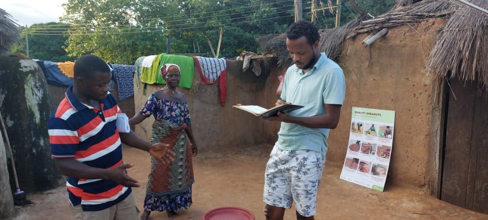
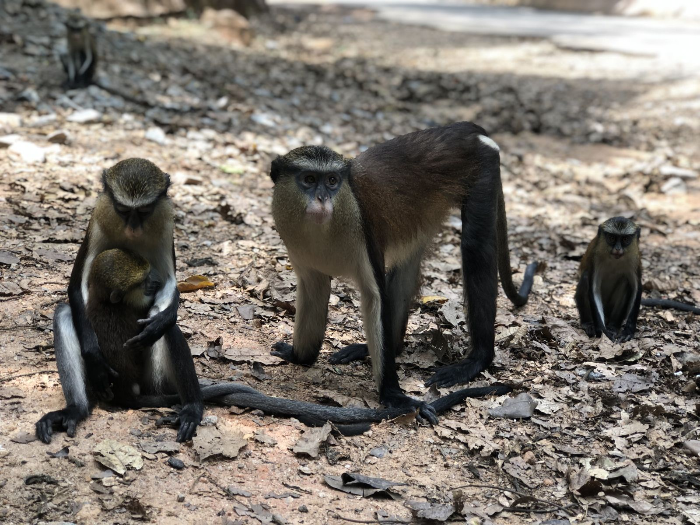

Samuel Adeyanju
Research
From community forests to carbon markets: how conservation and climate programs affect the people they are meant to benefit.
Do carbon market social safeguards hold up in practice?
Voluntary carbon projects commit to protecting and benefiting local communities, but those commitments are rarely tested against what happens on the ground. This project compares what forest carbon projects in West Africa promise in their registry documents with what independent audits find. It asks where safeguards are delivered, where they fall short, and what that means for communities and for the buyers who rely on these credits.

People, Projects, and Poverty
My dissertation examined the multidimensional impact of livelihood interventions in Community Resource Management Areas (CREMAs) in northern Ghana, where communities co-manage forest and wildlife resources. I led mixed-methods fieldwork across three Ghanaian regions, engaging more than 200 stakeholders, to examine how interventions work, who benefits, who is left out, and what limits their effectiveness. A central case was the shea value chain, a livelihood dominated by women.
Key finding. Investment in shea sourcing points was associated with a 15% increase in income.


Sacred groves and biodiversity conservation in Nigeria
My master's research compared three sacred groves in southwest Nigeria with different scales of governance. It showed that lasting protection depends on cooperation between customary institutions and formal government management. The work was featured in Forbes, Landscape News, and the InCommon podcast.